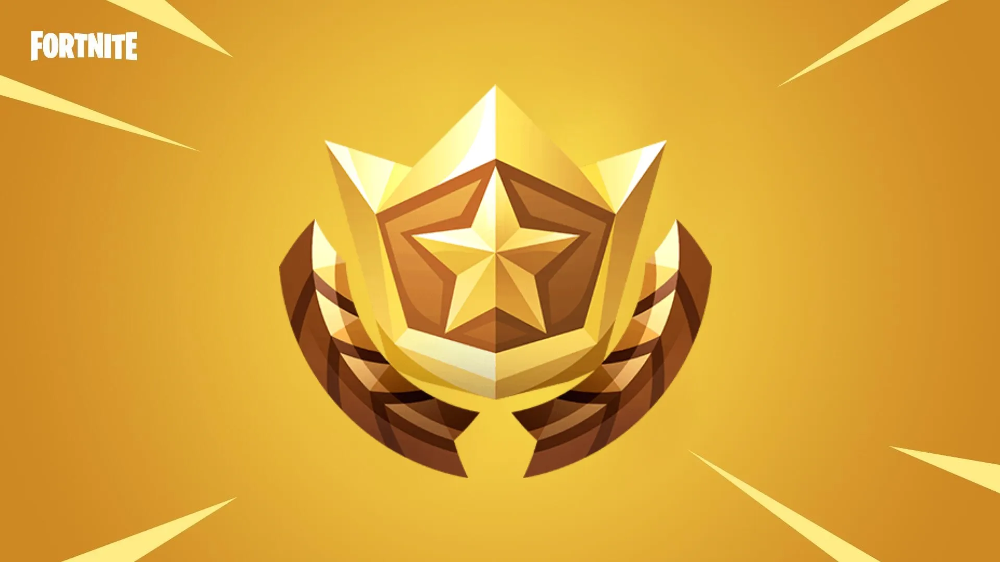
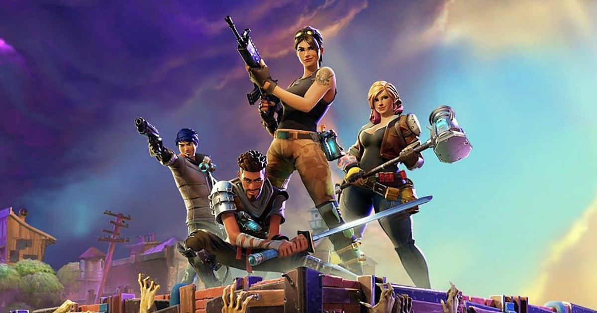

Tópicos relevantes
Passe de Batalha
Salve o Mundo
 Clique para saber mais
Clique para saber mais
Como surgiu o Fortnite?
A ideia de desenvolvimento do Fortnite Battle Royale surgiu após o lançamento do PlayerUnknown’s Battlegrounds, que quebrou inúmeros recordes de número de jogadores ao longo de 2017. Vendo seu rápido crescimento e sucesso comercial, a Epic Games viu a oportunidade de criar um modo battle royale próprio. Originalmente lançado como um modo do jogo pago, a Epic lançou uma versão dedicada do jogo oferecido como free-to-play financiado por microtransações, compartilhando a moeda do jogo com o principal jogo Fortnite, que permite que os jogadores comprem ou ganhem itens cosméticos e que personalizem as suas skins. Em julho de 2018, o jogo já obteve mais de 125 milhões de jogadores, e estima-se que tenha ganho mais de 1 bilhão de dólares em microtransações. Fortnite Battle Royale tornou-se um fenômeno cultural, com fluxos do Fortnite quebrando recordes de audiência, e com várias celebridades e atletas afirmando sua apreciação ao jogo.

Modos de jogo e objetivo
Fortnite possuí diversos modos de jogo, veja abaixo os principais:
Importante: Além desses existem diversos outros modos, mas não são principais, temos alguns modos como:
equipe tumulto, ouro maçico, encontros imediatos, etc, onde alguns desses vários modos ficam
por tempo limitado e voltam ao jogo ao longo do tempo. E algo que você pode fazer é habilitar o modo competitivo
nos modos do Battle Royal para ter um desafio maior.
Campeonatos
O jogo possuí diversos Campeonatos com diversas recompensas, é possível ganhar itens de porsonalização do jogo até recompensas em dinheiro. Mas nem todos os campeonatos são abertos pra todos, alguns são necessárrios passar por uma classificação antes de jogar, como campeonatos de temporadas, que ocorrem no final de uma temporada, onde apenas os melhores jogadores conseguem participar.
Esses campeonatos cada um possuí seu esquema de pontuação, mas geralmente o esquema é fazer o máximo de pontuação possível em dez partidas.
E um dos maiores campeonatos que ocorre é a FNCS(Fortnite Champion Series) que como mencionado, os melhores jogadores das classificatórias dele participarão do campeonato. E como é um dos maiores do jogo seu prêmio são milhares de dólares, para a pessoa que ganhou ou para a dupla ou trio.
Temporadas
E uma última coisa que podemos mencionar são as temporadas do jogo, que são períodos do jogo onde cada uma possuí uma temática e elementos únicos, como: personagens, mapa, armas, modos, etc. Em cada temporada existe um passe de batalha - que você pode ver acima na página - que pode ser adquirido com 950 V-Bucks(moeda do jogo). E por fim existe o campeonato final da temporada, como citado antes. Mas então vale muito a pena você jogar em cada temporada, pois cada uma possuí seus aspectos únicos que valem a pena serem vistos.